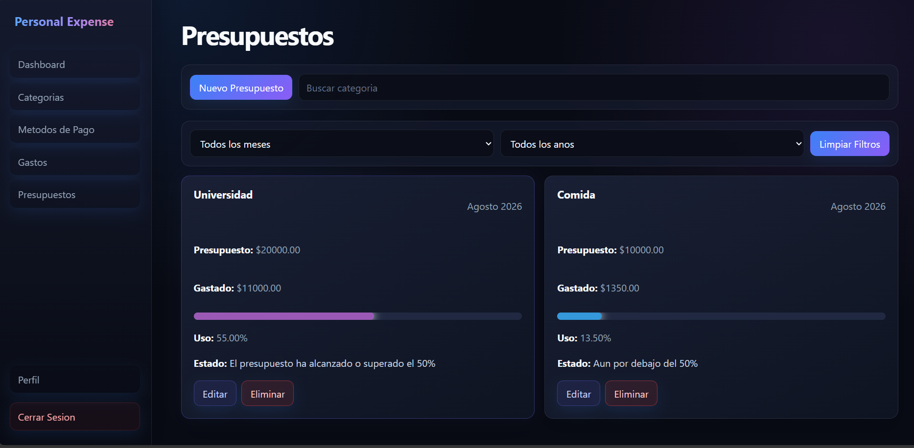
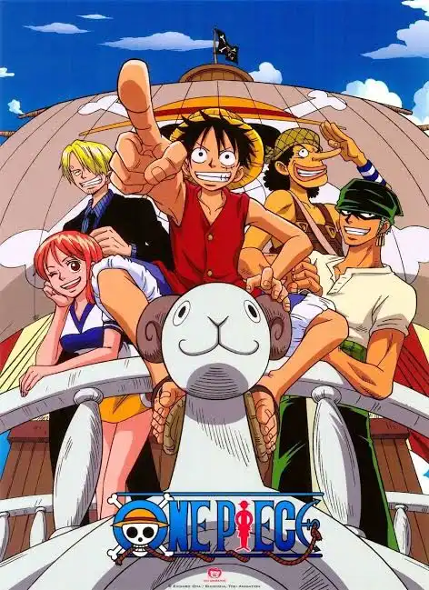
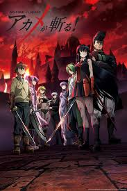

El Rincon de Navas
Mi Perfil
Soy alguien tranquilo y mayormente sereno, soy observador y algo que me suele caracterizar es mi capacidad de observacion (algo curioso para ser alguien que usa lentes) suelo ser alguien responsable y muy dedicado en todo lo que tengo que hacer aunque a su vez soy alguien perezoso, lo que hace que a veces deje pasar las cosas siendo este uno de mis grandes defectos, aun asi soy alguien comprometido y que siempe cumple con lo que dice. En cuanto a gusto, realemente disfruto el escuchar musica, dibujar, ver anime, peliculas y series, viendo actualmente la saga de Harry Potter. Siendo esto todo lo que se me ocurre escribir, muchas gracias si has llegado hasta aqui, ten lindo resto del dia, y que Viva Cristo Rey.
Mis Habilidades
Mi Galeria

Proyecto de Programacion
Un proyecto de programacion en el cual se pueden crear presupuestos y registrar los gastos por fechas y categorias

Anime favorito
Este es One Piece uno de los mejores animes de la historia a pesar de las criticas por su duracion.
Saga de peliculas que estoy viendo
Esta es una saga que apesar de constar con varios años de haber sido publicadas le di una oportunidad recientemente y se esta volviendo de mis favoritas.

Recomedacion
Si te gusta el anime o simple mente estas buscando algo para entretenerte te recomeindo este anime Akame Ga Kill, solo no te encariñes con los personajes.